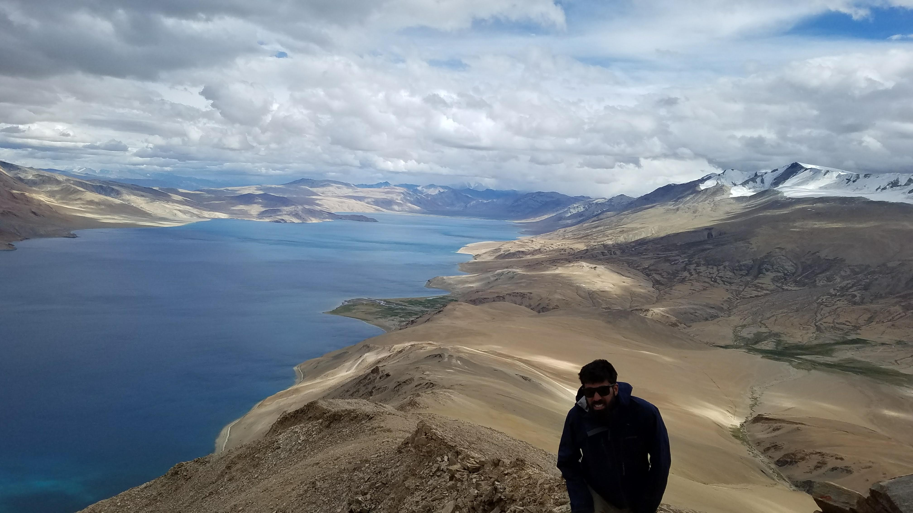
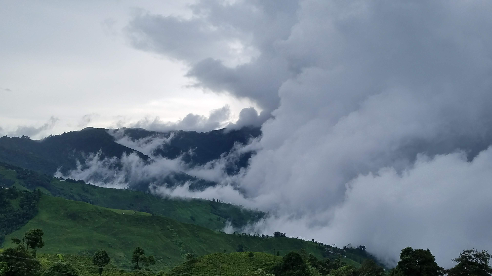
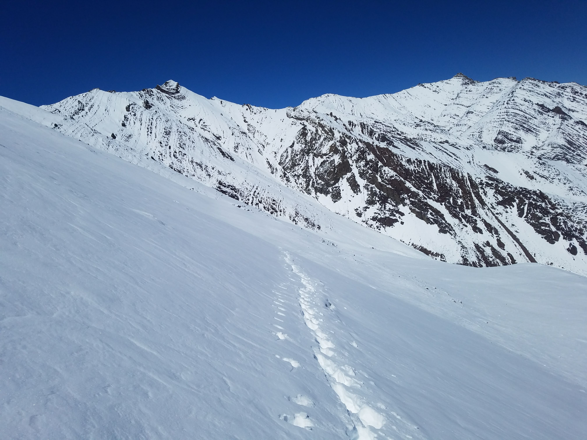

Where other endurance sports exploit the ability to quantify each and every aspect of performance, high achievement in
ultra-running remains relatively unhacked. Given how often we see 1-2 hours slashed from existing ultramarathon times,
it is safe to say, we know very little about maximizing performance.
The feat of running 100 miles in the mountains harbors some element of spiritual courage, some flair of transcendence
which almost contradicts the raw athleticism of racing an Ironman, where peak performance is better understood. Its
true that our sport is young and underfunded in comparison, but that does not mean ultra-runners don't aspire to maximize thier potential.

Getting the most from my mitochondria at 6000m Tso Moriri, Ladakh India.
It means there is a mystery afoot which I believe lies in the prominent overlapping of the physical and mental
frameworks. Considering the hideous duration of races and the fact that our arena is The Wild, maximized performance in
ultrarunning requires a heady blend of endurance beast and zen master.
“When the going gets weird, the weird turn pro."
Be it night, fog, precipitation, temperature, mud, so many whims of nature effect the way we run. From a metabolic level
to how we place our feet, we contend with constant interference. How we comport ourselves in the midst of these
challenges can make or break a race. Thus it is imperative we train not just the legs but the muscles of the mind.

Battling torrential rain and leeches while running in Darjeeling, India.
Hard training does translate to hardening the mind as it takes mental toughness to dig deep and maintain discipline, but
more often we optimize for physical adaptation. Whether it is dealing with the nerves early in a race to managing the
consequence of losing the trail to the brutality of pushing when you are broken—without a strong mind we are lost at
sea.
Rather than bemoaning difficulty, view each moment of weakness as an opportunity because by surviving the moment, by clearing the
obstacle you affirm resilience and build corrective thought patterns which over time become entrenched and arise naturally.
Here is a list of tactics I've found myself using when the training is challenging (as it should be). The goal of
these strategies is to promote mindfulness, being present and breaking negativity.
- Two instead of One If running for an hour becomes an insurmountable chore, imagine the chore is really two hours, neglect your watch for
the maximum amount of time and say to yourself that you will do two hours (hours/miles/climbing interchangeable).
Before you know it the time has come and gone.
- Segmentize When the task at hand feels too big bring the scale down to bite-size chunks (best practiced during a long run). Every
climb or descent or straight away is a node, pick something you know or can see and work your way there. As your mind
drifts to the task at large refocus on the edible the stuff in your direct path.
- Thought as Fuel To draw yourself out of vicious cycles of negativity, Call Yourself Out and Pivot. Intone positive affirmations within
and aloud, “We got this.” “Do the Work.” “Be Strong.” “Race to the Line.” “Get it Done.” Such banal mantras work! Trust
me.
- Shhhhh If there is something big and scary ahead, don't talk about it, kill the urge to imagine it. In the midst of a big
climb, instead of wishing it away, Ask for More.
- Rename Pain Pain comes and goes. And believe it or not is arbitrary. Raw data from animal organs. Relabel it 'colorful sensation'.
Instead of giving so much attention to red/purple/black (a bruised toe, cranky knee, sore calf) try out some other
colors (wind passing over forehead, the trees, space arriving before you, the transient levitation of your stride). Give
yourself to whatever strikes. With a bit of concentration you'll notice that where you sink your attention will dominate
your mood.
- Newton's First Law Every step forward is one less needed to get anywhere at any task running and un-running related, the trick is finding a
way to keep the steps continuous to not break that golden link which binds the last to the next. Momentum is a state of
being, lock into the flow. This can be elusive, to get there faster, leave your phone behind.

Slow and steady up a Himalayan pass
Powering through periods of suffering make us better people. Its key that we enter into training with an openness to
difficulty, that we test our limits but not supersede them, that we come out of periods of training a stronger body and
more resilient mind. As much as we want chiseled legs and a massive aerobic engine we should also strive for a
well-fortified mind. With good training we might achieve all three and then
Watch out!